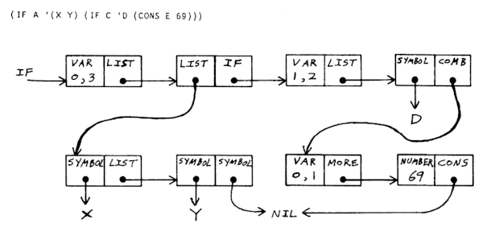

Functional languages rely on first-class functions, anonymous functions and immutability.
A programming paradigm in which function definitions are trees of expressions that map values to other values, rather than a sequence of imperative statements.
Fizzbuzz, in Heol Lisp.
(define print-ln (lambda (s) (and (print s) (print '\n)))) (define fizzbuzz (lambda (n f b) (if (< n 101) (if (and (eq? f 3) (eq? b 5)) (and (print-ln 'FizzBuzz) (fizzbuzz (+ n 1) 1 1)) (if (eq? f 3) (and (print-ln 'Fizz) (fizzbuzz (+ n 1) 1 (+ b 1))) (if (eq? b 5) (and (print-ln 'Buzz) (fizzbuzz (+ n 1) (+ f 1) 1)) (and (print-ln n) (fizzbuzz (+ n 1) (+ f 1) (+ b 1)))))) ()))) (fizzbuzz 1 1 1)
Fizzbuzz, in LISP 1.5.
(LETREC main (main λ (INPUT) (loop (QUOTE 1) (QUOTE 100))) (loop λ (x y v) (IF (LEQ x y) (loop (+ x (QUOTE 1)) y (fizzbuzz x)) (QUOTE Completed))) (fizzbuzz λ (n) (IF (EQ (% n (QUOTE 15)) (QUOTE 0)) (WRITE (QUOTE FizzBuzz)) (IF (EQ (% n (QUOTE 3)) (QUOTE 0)) (WRITE (QUOTE Fizz)) (IF (EQ (% n (QUOTE 5)) (QUOTE 0)) (WRITE (QUOTE Buzz)) (WRITE n))))))
A common trait of all dialects of LISP is the S-expression.
In Lisp, a pair of parentheses indicates one step of calculation, operations use the prefix notation.
Programs in Lisp are made of symbols that are nested into trees using cons cells. A number is a signed integer represented by a sequence of decimal digits, optionally preceded by a sign.
45 +137 -27
A symbol is word represented by a sequence of characters, it cannot begin with a number or a sign, although these may appear later in a symbol.
Hello Hello-world x32
A cons cell is an allocation of memory made of two parts, a value(car) and a pointer(cdr), the cdr can point to another cell.
(123) (hello 45) (foo (bar baz))

Gödel's bag, Gödel's bag,
Gödel's bag.
Bägel is a programming language where data is encoded as multisets(unordered bags of things) and compose by multiplication. Think Fractran, without the rule-searching of rewriting, or a strange Lisp in which cons cells are unordered lists.
In this mirror world, order does not matter, only presence and reduction.
Basics
Parentheses denotes a bag, which may contain whole numbers, fractions or other bags. The order of items in a bag does not matter.
; This is a comment () ; Empty(1), identity (2) ; 2 (2 (3)) ; 6 (3 (2 5/2)) ; 15
The evaluation consists of applying fractions on whole numbers starting at the deepest nested level upward until the bag stabilizes. The bag left after the last application is the output of a program.
(3/2 2) ; (3/2 2) -> 3 (3/5 125) ; (1/5 5^3) -> (1/5 3 5^2) (1/5 (5/7 7)) ; (1/5 (5/7 7)) -> (1/5 5) -> ()
When a bag contains multiple fractions, fractions always compose first before application.
(2/3 2/5 3 5) ; Two fractions in the bag. (4/15 3 5) ; The two fractions are composed before application. 2^2 ; It is applied.
Fractions may put other fractions in the bag.
(2/3/5 3 5) ; (2/3/5 3 5) -> (2/3 3) -> 2 ((5/3 3)/7 7) ; ((5/3 3)/7 7) -> (5/3 3) -> 5 (3/2/2/2 2^4) ; (3/2/2/2 2^4) -> (3/2/2 2^3) -> (3/2 2^2) -> (2 3)
Non-numeric symbols are automatically assigned an unused prime factor in the program, making it possible to operate on symbols.
(red green blue) ; A bag with 3 colors ((black white)/red red^2) ; ((black white)/red red^2) -> (red black white) (fizz/2^3 2 2 2) ; (fizz/2^3 2 2 2) -> fizz
Delayed Evaluation
Nested fraction in bags that can no longer be reduced fall to their outer scope. Its application is delayed, we can think of this as a thunk.
((3/4 2) 2) ; The inner bag cannot be reduced. (3/4 4) ; It composes with the outer bag. 3 ; It is applied.
The inverse situation is where a fraction waits for the bag above to pop.
(3/5 (2 5)) ; The inner bag cannot be reduced. (3/5 2 5) ; The inner bag pops. (2 3) ; It is applied.
All logic is done by attempting the application of fractions. The input of a program is the initial content of the bag, the output, its final state.
(true/(x y) x y) ; if(x && y) return bag/x/y * true (2/5/true true) ; if(true) bag /= true, if(5) return bag/5 * 2
Quotations
A quoted member in a fraction represents the unapplied fraction itself which is put back in the bag whole after application, this is the mechanism through which recursion is made.
('1/3 3^4) ; Loop for 3^n times
('1/3 3^3)
('1/3 3^2)
('1/3 3)
('1/3)
The evaluation can be summarized as trying to apply fractions until none remains.
('bar/foo 'baz/bar 'foo/baz foo) ; Cycle through 3 states indefinitely
('bar/foo 'baz/bar 'foo/baz bar)
('bar/foo 'baz/bar 'foo/baz baz)
('bar/foo 'baz/bar 'foo/baz foo)
bar, baz, foo..
Now, what is the two fractions are quoted? The also compose. This opens the possiblity of generating fractions on demand, making the program somewhat self-modifiable.
('2/3 '2/5 3 5) ; Two quoted fractions in the bag.
('4/15 3 5) ; Two quoted fractions in the bag.
('4/15 4) ; It is applied.
Now, what does a quoted integer, like '2, do? To be frank, I'm not sure, but it might just be the only way that quoted fractions can be destroyed.
('2/3 3^2 '3) ; A quoted fraction and a quoted integer.
('2/3 2 3 '3) ; A 3 becomes a 2.
('2/3 4 '3) ; A 3 becomes a 2.
4 ; The quoted 3 consumes the quoted fraction.

Implementation and details will be added soon, I wrote all this, as if in a fever, on the night of Halloween and expanded on it over the winter.
incoming: concatenative